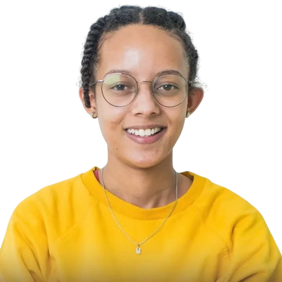
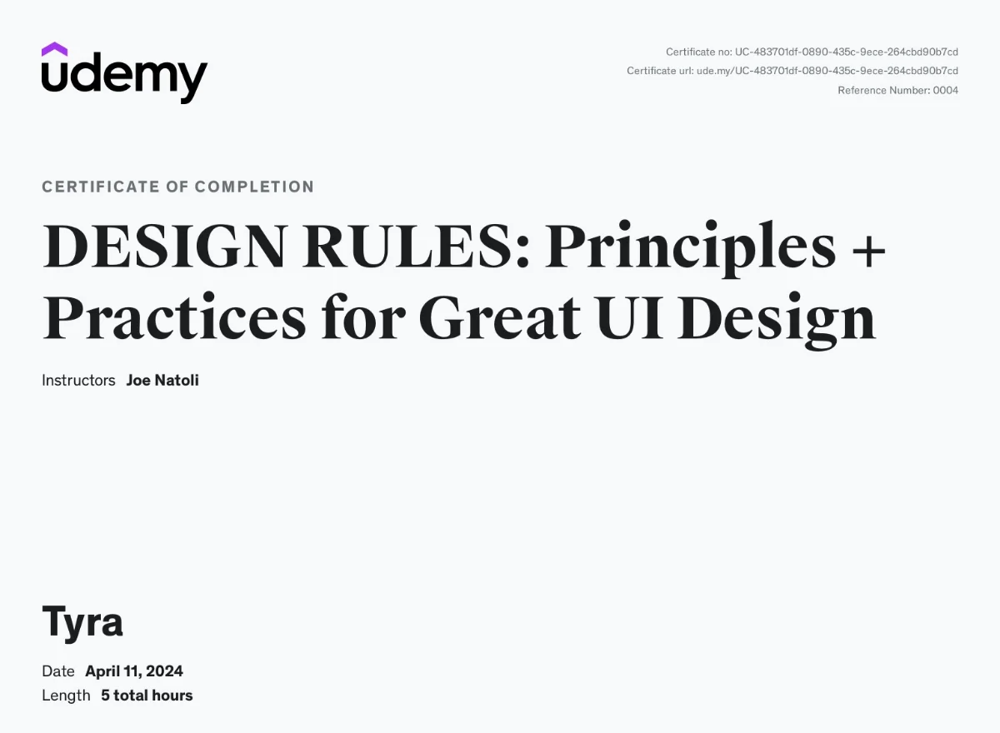
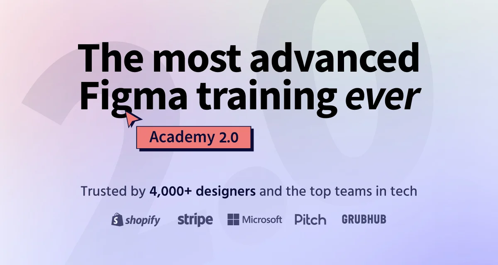
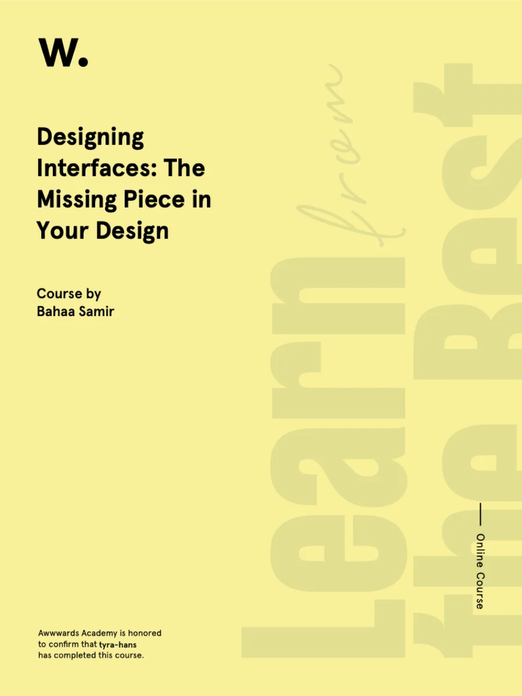

Designer Ambitious • Optimistic • Curious
I turn complex systems into intuitive experiences.
I'm Tyra, a product designer with 6 years of experience across fintech, field service software, and B2B SaaS. I've designed products used across Africa, turning complex workflows into intuitive experiences people and teams can rely on.
I use AI to explore ideas, push beyond conventional interfaces, and prototype what comes next, from agentic workflows to voice interactions.
I work closely with engineering to turn ambitious ideas into thoughtful, production-ready experiences that succeed in the real world.
Certifications

Design Rules: Principles + Practices for Great UI Design View certificate
Figma Academy 2.0: The Most Advanced Design Course on the Internet No certificate offered — completed the full course and learned advanced Figma workflows. Fundamentals of UX Design - Become a UX Designer from Scratch View certificate
Designing Interfaces: The Missing Piece in Your Design View certificateLatest musings
All musings
The Design System Every Small Team Couldn't Afford to Build, But Now Can.
March 28, 2026
How AI levels the playing field for small product teams drowning in an opaque codebase.
Read on Medium
When Designers are Treated like AI
May 12, 2025
Exploring the intersection of human creativity and artificial intelligence in the design process.
Read on Medium